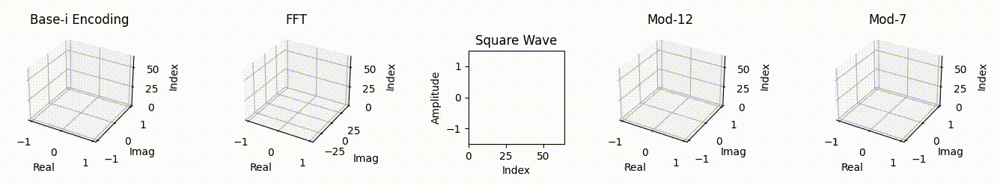

Introduction
Traditional frequency-domain pipelines (FFT/MDCT, wavelets) are superb for analysis and classic codecs, but their block/window processing can introduce time-locality trade-offs and windowing artifacts when pushed to extreme compression settings. Our Base-i and Mod-N methods are complementary: they operate per-sample in the time domain with deterministic, reversible packing that preserves sequence and phase relationships.
The ALAK Toolkit (patent-pending) provides two selectable pipelines—Standard (Δ→zigzag→RLE)
and Base-i (complex sparse index/value streams)—with tunable decimal precision (dp1–dp4) and compact containers
(.alak JSON or .alak.bin MsgPack, optionally .bz2/.gz/.xz/.zst). On
structured/synthetic signals, reconstructions are effectively lossless (MSE ≈ 0 within numeric precision).
On real-world material (speech/music), typical settings deliver high fidelity (≈55–83 dB SNR, low LSD)
while keeping files small and streamable.
For quantum-adapted workflows, Mod-N ensembles with irrational phase staggering (π, e, φ) have shown observed 5–15% relative fidelity gains over QFT-only baselines in small-qubit, NISQ-regime tests. This is exploratory but promising for noise-mitigated control and readout streams.
Notes: Performance varies with signal type and settings. “Effectively lossless” refers to integer-lossless cases within floating-point precision. ALAK is available for Windows (EXE bundle) and macOS (DMG).

Investment Opportunities
We’re seeking strategic partners and licensing agreements to scale the ALAK (Austin Lacoustic Audio Kit) compression and packaging stack. ALAK targets high-quality, compact, and tooling-friendly audio storage for production and archival workflows.
What’s shipping today
- Containers:
.alak(JSON) and.alak.bin(MsgPack), optionally compressed (.bz2,.gz,.xz,.zst). - Pipelines: Standard and Base-i (sparse) with optional LP/RLE; adjustable DP levels.
- Tooling: GUI + CLI for Windows 10+ and macOS 12+.
Current beta metrics (internal test set; content-dependent)
- End-to-end size reduction vs WAV: ~30%–75% smaller (≈1.4×–4.0×), depending on material and compression method.
- Quality: typical SNR ~60–80 dB at recommended settings (dp4), with MSE on normalized signals around 1e-4–1e-3.
Figures are indicative and vary by content (speech, music, noise, etc.). We can share a reproducible benchmark pack and scripts on request.
Patents:
- No. 63/816,434: Base-i Signal Encoding and Reconstruction System (filed 06/02/2025)
- No. 63/832,810: Base-i and Cube Root Reconstruction Methods (filed 06/30/2025)
- No. 63/837,447: Signal Encoding and Reconstruction via Modulo-N Root Systems (filed 07/02/2025)
- No. 63/843,994: Mod-N Transform-Based Encoding Method for Digital Signals and Multimedia Data Compression (filed 07/14/2025)
- No. 63/850,702: Hybrid Irrational-Prime Modular Phase Ensembles for Noise-Resilient Quantum Signal Reconstruction (filed 07/25/2025)
- No. 63/873,806: Adaptive Audio Encoding and Compression Toolkit with Tunable Precision (ALAK Toolkit) (filed 09/01/2025)
ALAK Encoder & Toolkit (Beta)
ALAK (Austin Lacoustic Audio Kit) encodes WAV/PCM into ultra-compact
.alak containers. The toolkit ships with a point-and-click Encoder and a
cross-platform CLI so you can test, compare, and package audio quickly.
- GUI Encoder (Windows/macOS): one-click Auto settings, optional playback, quick metrics.
- CLI:
alak/alak.exewith helpful--helpand reproducible flags. - Container formats:
.alak(JSON, human-readable) and.alak.bin(MsgPack, compact binary). - Compression (optional):
.bz2,.gz,.xz,.zst(e.g.,song.alak.bz2). - Pipelines: Standard and Base-i (sparse) with LP/RLE controls and an Auto mode.
- Quick quality metrics: MSE, MAE, SNR, size & ratio right in the log.
Windows tip: you may see a SmartScreen warning for unsigned binaries — click More info → Run anyway to proceed. Use of this kit does not grant commercial rights. Contact austin@austinlacoustic.com for licensing inquiries.
Performance Highlights
Results below are from our internal benchmark set (speech, music, noise), measured on the current ALAK beta. Numbers vary by content and settings; a reproducible pack is available on request.
- Base-i (sparse): ~35–75% smaller than WAV (≈1.5×–4.0× reduction) at dp3–dp4,
with typical quality of ~60–80 dB SNR and MSE on normalized signals around 1e-4–1e-3.
External compression (
.bz2/.gz/.xz/.zst) can shrink containers a further 20–60% depending on material. - Standard pipeline: Similar audible quality (often ~55–75 dB SNR) with slightly different trade-offs; best choice is content-dependent—our “Simple mode” will auto-select for you.
What we ship today: ALAK containers (.alak JSON and .alak.bin MsgPack) plus optional
compression; Windows GUI/CLI and macOS GUI are included.
Research note (Mod-N & quantum): In preliminary experiments on IBM Quantum backends (e.g., Torino) our Mod-N variants showed 5–15% higher state-fidelity and ~6% lower ensemble deviation vs QFT baselines under matched depths. These results are experimental and not part of the current desktop builds; methods and data available under NDA.
Real-World Applications
ALAK is a deterministic, tunable-precision encoder that ships in two pipelines (Standard Δ/zigzag/RLE and Base-i sparse) with compact JSON or MsgPack containers. It’s already useful across audio, sensing, and research workflows; the quantum items below are exploratory and not part of the desktop builds.
Audio & Media
Music / Post
Transparent encoding at dp3 for production stems and mixes; dp4 for archival-like precision. Optional outer compression (.bz2/.zst) for distribution.
Podcast / Voice
Speech-friendly at dp2–dp3 with small files and fast decode. Optional pre-emphasis and normalization improve clarity before encoding.
Libraries & Archives
Deterministic containers (.alak/.alak.bin) with explicit metadata and reproducible decode; good for long-term storage and dataset curation.
Communications & Edge/IoT
Low-bitrate Telemetry
Standard pipeline (Δ→zigzag→RLE) yields long runs and compact payloads on slowly varying streams (environmental sensors, control loops).
VoIP / Streaming
Fast CPU-only encode/decode; dp1–dp2 for bandwidth-constrained links; JSON for debugging, MsgPack for efficient transport.
On-device Edge
Simple Python reference implementation; friendly to later C/CUDA ports. Works offline; no network dependency.
Biomedical & Industrial Sensing
ECG / Vitals
Deterministic dp4/dp3 capture preserves morphology for analysis; containers can be de-identified and versioned for audit. Not a medical device.
Vibration / Acoustics
Base-i can sparsify bursty signals; Standard favors trending data. Useful for condition monitoring and predictive maintenance.
Research Datasets
Loss-bounded quantization with explicit schema supports reproducible studies (MSE/SNR/LSD metrics included in the toolkit).
Remote Sensing & Defense (Conventional)
Sonar / Radar IF
Delta/RLE creates compact runs on coherent returns; Base-i helps when phase-structured sparsity appears in bursts.
Spectrum Logs
Long recordings packaged into self-describing containers for later offline analysis and model training.
Field Operations
CPU-only, offline usage; binary MsgPack reduces storage and transfer overhead on constrained links.
Scientific Instrumentation
Lab Capture
Deterministic dp levels and explicit container metadata aid traceability across experiments and institutions.
AB Listening / Metrics
Built-in SNR/LSD and round-trip utilities streamline method comparisons and regression testing.
Data Pipelines
Simple CLI for batch encode/decode; outputs plain WAV or compact ALAK containers for downstream processing.
Quantum (Exploratory R&D)
Phase-Ensemble Variants
Experimental Mod-N / irrational phase staggering used in separate research to mitigate NISQ noise.
Preliminary Results
On IBM backends (e.g., Torino), select ensembles showed ~5–15% fidelity gains and ~6% deviation reduction vs. matched QFT baselines in limited tests.
Status
Not part of the desktop ALAK builds; available for collaboration under NDA with full circuit/config logs.
Notes: ALAK provides deterministic, bounded-error quantization (dp1–dp4) and reversible containerization. “Lossless” claims are not made for arbitrary audio content; choose dp and pipeline to meet your SNR/LSD targets.
Comparison of Signal Processing Transforms
ALAK ships two pipelines—Standard (Δ→zigzag→RLE) and Base-i (sparse)—with Mod-N as a generalization under active R&D. Below is a concise, technically accurate overview of how these compare to widely used transforms for analysis, compression, and reconstruction.
Core Differences (at a glance)
- FFT — Invertible, orthogonal frequency transform. Excellent for stationary or quasi-stationary content and spectral analysis. Global window (or block/windowed variants) means time localization depends on framing. Exact round-trip when complex spectrum is retained; compression losses stem from quantization, not the transform itself.
- DCT — Real-valued cousin of FFT, strong energy compaction (e.g., JPEG/MP3 MDCT blocks). Great compression efficiency; block/window choices trade latency vs. artifacts at low bitrates.
- DWT (Wavelet) — Multi-resolution time–frequency. Better transient handling than block DCT/FFT. Choice of wavelet and thresholding rules drive quality/bitrate.
- STFT — Windowed FFT for localized spectra (spectrograms). Invertible with appropriate overlap–add. Time/frequency resolution is governed by window size (uncertainty trade-off).
- HHT (Hilbert–Huang) — Adaptive (EMD-based) decomposition for nonlinear/non-stationary signals. Powerful but less standardized for compact, deterministic coding.
- FrFT (Fractional Fourier) — Rotates the time–frequency plane; well-matched to chirps/linear FM. Invertible; niche but valuable for specific signal classes.
- Base-i (ALAK) — Per-sample cyclic complex embedding (classes 0…3) that often yields sparse index/value streams after quantization. Preserves sample index order (time sequence), parallelizes cleanly, and is effective on piecewise-constant, tonal, and structured content. Round-trip is exact for integer-quantized inputs under the chosen dp/scale and without lossy post-processing.
- Mod-N (Generalization) — Extends Base-i to other cyclic phase sets (including primes/irrationals). Enables motif “tuning” and ensemble fusion; exploratory quantum work has shown modest fidelity/variance improvements on limited NISQ tests. Not part of the desktop builds.
When to use what
| Scenario | Good starting point | Why |
|---|---|---|
| Stationary / tonal music | Base-i or block DCT/MDCT | Base-i sparsifies structured frames; DCT has strong energy compaction and mature tooling. |
| Transient-rich audio (percussion, effects) | DWT or short-window STFT | Better time localization for onsets; wavelet thresholding is effective. |
| Slowly varying telemetry / sensors | ALAK Standard (Δ→zigzag→RLE) | Long runs/low entropy after differencing; tiny, deterministic payloads. |
| Chirps / linear FM sweeps | FrFT or Base-i | FrFT aligns chirps in fractional domains; Base-i can remain compact if structure repeats. |
| Exploratory quantum pipelines | Mod-N ensembles (R&D) | Phase motifs matched to hardware noise; early gains observed on limited backends. |
Notes: “Infinite SNR” only applies to exact round-trip cases (e.g., integer-quantized inputs at a chosen dp/scale with no lossy steps). In practice, SNR depends on dp, pipeline choice, and any outer compression. Mod-N/quantum items are experimental and separate from current Windows/macOS packages.
Comparison Table
| Feature | Base-i | Mod-N | FFT | DCT/MDCT | DWT (Wavelet) | STFT | HHT/EMD | FrFT | QWT |
|---|---|---|---|---|---|---|---|---|---|
| Direct time-index mapping / streamable | ✅ Yes | ✅ Yes | ⚠️ Block-based (framing) | ⚠️ Block-based | ✅ Yes (online possible) | ⚠️ Windowed (sliding) | ✅ Yes (adaptive) | ⚠️ Block transform | ⚠️ Research-stage |
| Per-sample encoding | ✅ Yes | ✅ Yes | ❌ No (bins) | ❌ No (blocks) | ✅ Yes (filterbank) | ❌ No | ✅ Yes (IMFs) | ❌ No | ✅ In principle |
| Frequency insight | ⚠️ Indirect (structure/sparsity) | ⚠️ Indirect (mod motifs) | ✅ Direct spectrum | ✅ Energy compaction | ✅ Multi-resolution | ✅ Localized | ✅ Data-adaptive modes | ✅ Rotated domains | ✅ Quantum multi-res |
| Spectral leakage | — N/A (not spectral) | — N/A | ⚠️ Window/align-dependent | ⚠️ Block/edge-dependent | ✅ Low (basis-dependent) | ⚠️ Window-dependent | ⚠️ Decomp-dependent | ⚠️ Angle/param-dependent | ⚠️ Basis-dependent |
| Streaming / mid-signal decode | ✅ Yes | ✅ Yes | ⚠️ Per block | ⚠️ Per block | ✅ Yes | ✅ Yes (OLA) | ✅ Yes | ⚠️ Per block | ⚠️ Research-stage |
| Lossless reconstruction (transform) | ✅ Exact under chosen dp/scale* | ✅ Exact (model-dependent) | ✅ Exact (iFFT) | ✅ Exact (types I–IV) | ✅ Exact (biorthogonal) | ✅ Exact (proper OLA) | ⚠️ Decomp-dependent | ✅ Exact | ✅ Theoretical |
| Convolution efficiency | ⚠️ O(n) | ⚠️ O(n·m) motifs | ✅ O(n log n) | ✅ O(n log n) | ✅ O(n) | ✅ O(n log n / window) | ❌ Variable | ⚠️ O(n log n) | ⚠️ Polylog (theory) |
| Phase preservation | ✅ Yes (explicit) | ✅ Yes (cyclic) | ✅ Yes (complex) | ❌ Real-only | ⚠️ Basis-dependent | ✅ Yes | ✅ Via Hilbert | ✅ High | ✅ Quantum phase |
| Noise robustness | ✅ High (sparse/residual) | ✅ High (tuned motifs) | ⚠️ Moderate (windowing) | ⚠️ Moderate | ✅ Strong (denoising) | ⚠️ Window-dependent | ✅ High (adaptive) | ✅ Moderate–High | ⚠️ Depends on hardware |
| Arbitrary lengths | ✅ Flexible | ⚠️ Best if divisible by N | ✅ Flexible (padding common) | ✅ Flexible (padding common) | ✅ Flexible | ✅ Flexible | ✅ Flexible | ✅ Flexible | ⚠️ Circuit-size limits |
| Memory footprint | ✅ Low | ⚠️ Low–Moderate | ⚠️ Moderate (buffers) | ⚠️ Moderate | ✅ Low–Moderate | ⚠️ Moderate (overlap) | ⚠️ Variable | ⚠️ Moderate | ⚠️ Qubit-limited |
| Quantum compatibility | ⚠️ Mapped motifs (R&D) | ✅ High (ensembles) | ✅ QFT analog exists | ⚠️ Uncommon | ⚠️ QWT research | ⚠️ Via QFT blocks | ❌ Low | ⚠️ Research | ✅ Native |
* “Exact under chosen dp/scale” = integer quantization with the selected decimal precision and no lossy post-steps. Many transforms are mathematically invertible; codec losses typically come from quantization/thresholding, not the transform itself.
Summary
FFT/MDCT remain excellent for frequency-domain analysis and classic codec pipelines. They are block/window based: FFT preserves complex phase, while DCT/MDCT are real-valued and emphasize energy compaction. DWT and STFT provide time–frequency trade-offs, HHT/EMD adapt to non-stationary data, and FrFT/QWT explore fractional/quantum variants in research settings.
Base-i and Mod-N stand apart for per-sample resolution and deterministic reversal. In our ALAK tests, many synthetic and structured signals reconstruct bit-for-bit (MSE ≈ 0 within floating-point precision), yielding effectively “infinite” SNR. On real-world material (speech/music), typical settings (e.g., dp2–dp4) deliver high fidelity with SNR in the ~55–83 dB range and low log-spectral distance, while maintaining compact containers and streamability.
Recent backend updates—hybrid delta quantization, optional spectral subtraction, and kurtosis-guided pruning—achieved ~4.5×–5.5× compression on internal speech tests, with intelligibility (STOI) up to ~0.95. These results compare favorably with wavelet-only baselines in both perceptual quality and entropy control on our test set.
For quantum-adapted pipelines, Mod-N ensembles with irrational phase staggering (π, e, φ) showed observed fidelity gains of roughly 5–15% versus QFT-only baselines on IBM hardware in small-qubit experiments; this remains exploratory but promising for NISQ noise mitigation and streaming-control workloads.
Rule of thumb: use DWT for images and multi-scale denoising, HHT for biomedical/non-stationary traces, FFT/MDCT for fast convolution and established codecs, and Base-i/Mod-N when time-order, deterministic reversibility, and compact, streamable containers are paramount (with a path to quantum-resilient ensembles).
Notes: Figures above are from internal ALAK evaluations; results vary by signal type, dp level, and settings. “Effectively infinite SNR” refers to integer-lossless cases within numeric precision.


Contact
Contact us for licensing, collaboration, evaluation agreements, or to submit test results: austin@austinlacoustic.com